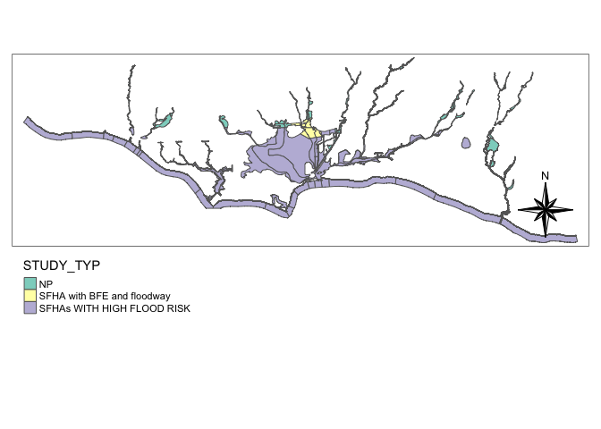
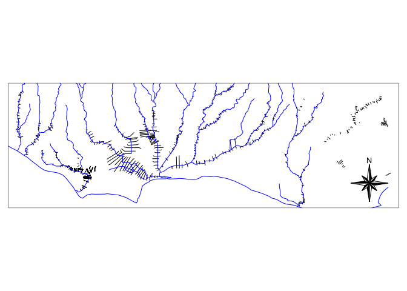

The NFHL package provides access data from FEMA’s National Flood Hazards Layers. It integates with the AOI package for spatial subsetting workflows and offers functionality to extract and query NFHL layers.
Installation
You can install the development version of NFHL from GitHub with:
Basic Workflow
Layer IDs
The NFHL contains data for 32 layers. Use nfhl_meta to view the list of available layer IDs and names.
nfhl_meta#> type layerID
#> 1 NFHL Availability 0
#> 2 LOMRs 1
#> 3 LOMAs 2
#> 4 FIRM Panels 3
#> 5 Base Index 4
#> 6 PLSS 5
#> 7 Topographic Low Confidence Areas 6
#> 8 River Mile Markers 7
#> 9 Datum Conversion Points 8
#> 10 Coastal Gages 9
#> 11 Gages 10
#> 12 Nodes 11
#> 13 High Water Marks 12
#> 14 Station Start Points 13
#> 15 Cross-Sections 14
#> 16 Coastal Transects 15
#> 17 Base Flood Elevations 16
#> 18 Profile Baselines 17
#> 19 Transect Baselines 18
#> 20 Limit of Moderate Wave Action 19
#> 21 Water Lines 20
#> 22 Political Jurisdictions 22
#> 23 Levees 23
#> 24 General Structures 24
#> 25 Primary Frontal Dunes 25
#> 26 Hydrologic Reaches 26
#> 27 Flood Hazard Boundaries 27
#> 28 Flood Hazard Zones 28
#> 29 Submittal Information 29
#> 30 Alluvial Fans 30
#> 31 Subbasins 31
#> 32 Water Areas 32Layer descriptions
To get detailed information, such as layer name, description, and bounding box, use the nfhl_describe() function. For example, let’s explore Layer ID 14 (Cross-Sections):
nfhl_describe(14)
#> $Layer
#> [1] "Cross-Sections (ID: 14)"
#>
#> $Description
#> [1] "Normally, any FIRM that has associated flood profiles has cross sections. The S_XS table contains information about cross section lines. These lines usually represent the locations of channel surveys performed for input into the hydraulic model used to calculate flood elevations. Sometimes cross sections are interpolated between surveyed cross sections using high accuracy elevation data. Depending on the zone designation (Zone AE, Zone A, etc.), these locations may be shown on Flood Profiles in the FIS report and can be used to cross reference the Flood Profiles to the planimetric depiction of the flood hazards. This information is used in the Floodway Data Tables in the FIS report, as well as on the FIRM panels."
#>
#> $bbox
#> Geometry set for 1 feature
#> Geometry type: POLYGON
#> Dimension: XY
#> Bounding box: xmin: -170.8102 ymin: -14.3509 xmax: 145.7601 ymax: 64.89804
#> Geodetic CRS: NAD83
#> POLYGON ((-170.8102 -14.3509, 145.7601 -14.3509...Extracting Spatial Data
The nfhl_get() function retrieves spatial data for a specific layer and area of interest (AOI). The general workflow involves:
- Defining an AOI.
- Selecting a layer ID.
- Extracting spatial data.
# Define an AOI around UCSB
AOI <- AOI::aoi_ext("UCSB", wh = 10, units = "km", bbox = TRUE) |>
st_as_sf()
# View at Layer ID 28 description
nfhl_describe(28)$Description
#> [1] "The S_Fld_Haz_Ar table contains information about the flood hazards within the flood risk project area. These zones are used by FEMA to designate the SFHA and for insurance rating purposes. These data are the regulatory flood zones designated by FEMA."
# Extract Flood Hazard Polygons and filter by Special Flood
# Hazard Areas (SFHA)
floodhazard <- nfhl_get(AOI, 28) %>%
filter(SFHA_TF == "T")
Examples
Overlaying NHD and NFHL Cross-Sections
Layer ID 14 provides cross-sectional data. Let’s overlay it with hydrographic data from the National Hydrography Dataset (NHD) using the nhdplusTools package:
Before we learned that the NFHL offered cross-sectional information (ID: 14). Lets get this data for our UCSB AOI, and overlay it with hydrographic data from NHD.
# Get NHD data for the AOI
nhd <- nhdplusTools::get_nhdplus(AOI)
# Extract NFHL Cross-Section data (ID: 14)
cs <- nfhl_get(nhd, 14)
Linking General Structures with NHD
Layer ID 24 provides data on “General Structures.” Here, we extract this layer, overlay it with NHD data, and identify structures that cross NHD features.
# Describe Layer ID 24
nfhl_describe(24)$Description
#> [1] "This table includes levees, floodwalls, or dikes that have been designed for flood control, including those portions that are closure structures, whether or not they have been demonstrated to meet the NFIP requirements in 44 CFR 65.10. This information is shown in the Levees table in the FIS report and on the FIRM panels. The S_Levee table contains information about levees shown on the FIRMs that are accredited and known to be protecting against the 1-percent-annual-chance flood, as well as levees that are provisionally accredited, de-accredited, and never accredited. The purpose of this table is to document the accreditation status of levees, as well as associated information necessary to be shown on the FIRM and for the population of FIS report text related to levee structures. The spatial entities representing levees are lines, drawn at the centerline of levees, floodwalls, and levee closure structures."
# Extract General Structures
stru <- nfhl_get(AOI, 24)
# Identify crossings between structures and NHD data
crossings = st_join(stru, st_transform(nhd, st_crs(stru)), join = st_crosses,
left = FALSE) %>%
st_drop_geometry() %>%
mutate(realtionship = "crosses") %>%
select(OBJECTID, realtionship, comid, STRUCT_TYP, LAYER)
#> although coordinates are longitude/latitude, st_crosses assumes that they are
#> planar
# View results
head(crossings)
#> OBJECTID realtionship comid STRUCT_TYP LAYER
#> 2 932599 crosses 17596113 Bridge 24
#> 3 932622 crosses 17596113 Bridge 24
#> 4 932768 crosses 17595367 Bridge 24
#> 10 932871 crosses 17595405 Bridge 24
#> 12 932842 crosses 17595351 Footbridge 24
#> 17 932527 crosses 17595357 Culvert 24Here, we identified 49 structural crossing’s in the AOI river networ. For example, bridge 932599 crosses COMID 17596113.

Here, we identified 49 structural crossing’s in the AOI river networ. For example, bridge 932599 crosses COMID 17596113.
Acknowledgements
Mike Johnson is the Geospatial Science and Technology Lead at NOAA’s Office of Water Prediction (OWP). This work contributes to the NSFfunded Convergence Accelorator Program on Urban Flooding.
This package is experimental and comes with no guarantee. Pull requests are welcome!!